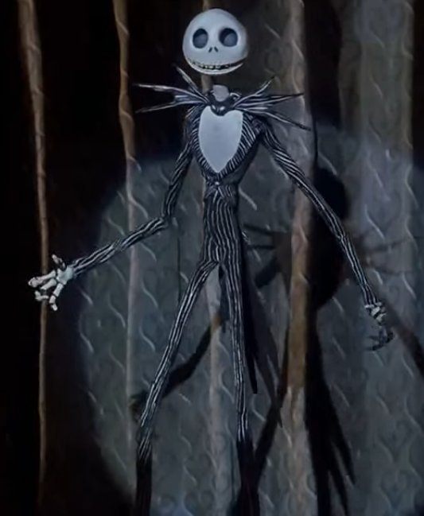
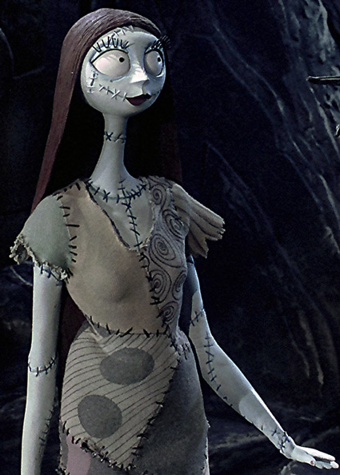
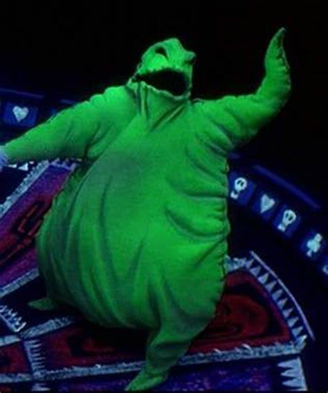
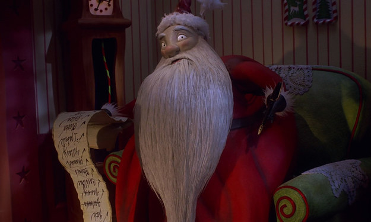

The Nightmare Before Christmas tells the story of Jack Skellington, king of pumpkins and Halloween in Halloween Town. Tired of the repetitiveness that comes from preparing for Halloween everyday of the year, Jack finds himself in Christmas Town, a town full of Christmas spirit. Jack is marveled by the town and decides to use its customs for a new, exciting Halloween celebration. His friend, Sally warns him about the thing that could go wrong, but Jack doesn't heed her advice. He sends helpers to kidnap Santa, but they bring him to their evil master, Oogie Boogie. Sally tries to save him, but is captured too, in the process. Jack however, is out terrorizing children in Christmas Town with his Halloween styled presents, and is forced to go back to Halloween Town. He saves Santa and Sally from the malicious villain. Santa reverses the mess in Christmas Town and gifts Halloween Town snowfall, which Jack is very grateful for. The movie ends with Jack and Sally professing their love for one another.
Directed by: Henry Selick
Chris Sarandon (speaking) and Danny Elfman (singing) as Jack Skellington
Catherine O'Hara as Sally
Ken Page as Oogie Boogie
Ed Ivory as Santa Claus
| "This is Halloween" | The Citizens of Halloween Town |
| "Jack's Lament" | Danny Elfman |
| "What's This?" | Danny Elfman |
| "Kidnap the Sandy Claws" | Paul Reubens, Catherine O'Hara, Danny Elfman |
| "Oogie Boogie's Song" | Ken Page, Ed Ivory |